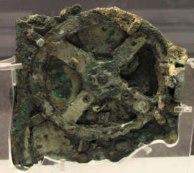
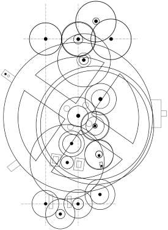

Антиките́рский механи́зм (другие варианты написания: андики́тирский, антикифирский, антикиферский; др.-греч. Μηχανισμός των Αντικυθήρων) — механическое устройство, поднятое в 1901 году с древнего судна. Остатки судна и его груз обнаружены греческим водолазом 4 апреля 1900 года недалеко от греческого острова Андики́тира (Антикитера, др.-греч. Αντικύθηρα). Механизм датируется приблизительно второй половиной II века до н. э. (по некоторым оценкам — до 205 года до н. э.). Хранится в Национальном археологическом музее в Афинах. Механизм содержал не менее 30 бронзовых шестерён в прямоугольном деревянном корпусе, на бронзовых передней и задней панелях которого были размещены циферблаты со стрелками. Две прямоугольные бронзовые защитные пластины прикрывали переднюю и заднюю панель. Ориентировочные размеры в сборе 31,5×17×6 см.
Механизм использовался для расчёта движения небесных тел и позволял узнать дату 42 астрономических событий. В 2017 году с помощью специально разработанной компьютерной программы определено, что устройство было, вероятно, разработано или использовалось в местности, которая расположена внутри полосы широт от 33,3 с. ш. до 37 с. ш.Мог быть изготовлен на Родосе (36,4 с. ш.) или в Сиракузах (37,1 с. ш.).
Устройства, аналогичные антикитерскому механизму, упоминаются более чем в дюжине литературных произведений, которые написаны с 300 года до н. э. по 500 год н. э.
Греческий водолаз Ликопантис обнаружил 4 апреля 1900 г. античный римский корабль, затонувший в Эгейском море между греческим островом Крит и полуостровом Пелопоннес недалеко от острова Андикитира (Антикитера) на глубине от 43 до 62 м. Возможно, корабль шёл с острова Родос, где во II веке до н. э. жил и работал известный греческий астроном и математик Гиппарх Никейский. Работы по подъёму древностей продолжались с ноября 1900 года по 30 сентября 1901 года. Водолазы подняли на поверхность множество артефактов: бронзовые и мраморные статуи — в том числе Аполлона, Гермеса, Одиссея, Диомеда со своими лошадьми и гигантского Геракла (похожего на Геркулеса Фарнезского из Археологического музея Неаполя) и так называемый «Антикитерский философ» (бронзовая статуя философа). Самой ценной из находок помимо механизма стала бронзовая статуя юноши — так называемый Эфеб с Антикитеры. Кроме того, были найдены небольшая бронзовая лира или гитара, остатки нескольких красивых диванов с бронзовыми орнаментами (со львами и утками), монеты, ювелирные изделия, керамика, уникальные изделия из стекла. Находки были переданы в Национальный археологический музей в Афинах для изучения и хранения. 17 мая 1902 года археолог Валериос Стаис осматривал куски корродированной бронзы, покрытые толстым слоем морских отложений, которые считали обломками статуй. Внезапно он обнаружил, что некоторые куски являются фрагментами механизма. Артефакт активно изучали с 1951 года, когда английский историк Дерек Джон де Солла Прайс заинтересовался им, обосновал и доказал, что механизм является уникальным античным механическим вычислительным устройством.
Монеты, найденные на затонувшем корабле в 1976 году экспедицией французского исследователя Жака-Ива Кусто, дали первую примерную дату изготовления находки — 85 год до н. э.
*Отображение положения Солнца
*Отображение положения Луны (включая фазу)
*Определение солнечных и лунных затмений
*Определение даты важнейших греческих игр и празднеств: Олимпиады, Наайские игры, Пифийские игры, Немейские игры и Истмийские игры
Первые исследования механизма проводились с 1902 по 1910 и с 1925 по 1930 годы. Уже в ходе первых осмотров прибора стало ясно, что «астролябия», как некоторые изначально называли этот сложный прибор, была гораздо более продвинутой, чем любые известные астролябии. Редиадис, Радос и Теофанидис (все — греческие военно-морские офицеры и адмиралы) написали ряд статей на эту тему с 1903 по 1930 годы. Теофанидис сконструировал первую бронзовую модель астрономических часов, которые показывали некоторые из планет. Но более серьёзные результаты были получены с помощью рентгеновских исследований Прайсом в 1951—1978 годах.
